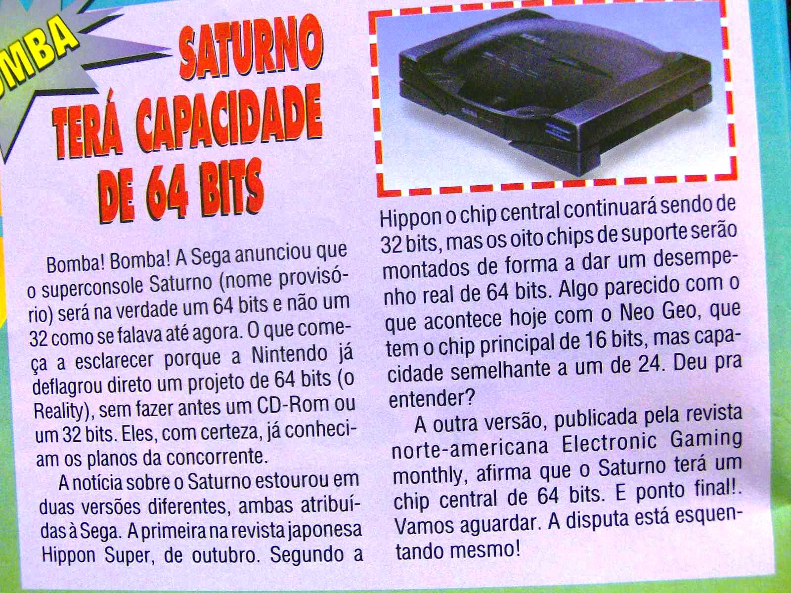

Saturn terá 64 bits!!!
 :::.Por Gigacom
:::.Por Gigacom
fonte: Ação Games nº 49
Particularmente acredito que a Ação Games pegava
informações de revistas do tipo Tititi, Craúdia e
Caras para poder republicar. Sério! Vez por outra ela aparecia
com umas novidades meio doidas, com um pouco de verdade e o resto de
fofoca. Pois bem, mostremos a tal noticia:

clique na imagem para aumentar
A verdade é que a Sega havia
anunciado que o Saturn seria um 32 bits com capacidade semelhante ao de
um 64, conforme a revista Hippon Super havia anunciado, mas não
teria nem um único processador sequer de 64 bits, como a EGM
afirmou e a Ação Games tambem, já achando que a
Nintendo sabia de tudo antes de todo mundo  .
.
Por fim, o Saturn quando lançado, veio com uma penca de processadores, bem uns 8 se não me engano. Vamos contar:
2 de video (VDP1 e VDP2), 2 de processamento central (SH2),
um MC68000 para controlar o som, outro Yamaha para gerar o som, mais
outro para controlar os dados de entrada do CD-Rom (SH1) e o ultimo
para controlar os dados de entrada e saída dos perifericos.
Arrê! Tem mais de 8! Mas normalmente o ultimo processador que mencionei nem entra na conta de muitos .
.
Com duas CPUs e duas GPUs, cada uma de 32-bits, se fossem somados tudo, daria 128 bits! Então o Saturn foi o primeiro video game de 128 bits ? Não mesmo
? Não mesmo .
O arranjo de processadores do Saturn possibilitava um desempenho real
muito superior ao de um único processador de 32 bits, mas
mesmo assim continua sendo o que é, e não um mutante
X-men com mil e uma funções. De qualquer forma, o
hardware do Saturn de longe era o melhor da época, o mais
robusto e mais preparado daquela geração, superando tanto
o Playstation quanto o Nintendo 64, mas foi pouco aproveitado tendo um
ou outro jogo que realmente usou tudo aquilo que ele tinha pra dar.
.
O arranjo de processadores do Saturn possibilitava um desempenho real
muito superior ao de um único processador de 32 bits, mas
mesmo assim continua sendo o que é, e não um mutante
X-men com mil e uma funções. De qualquer forma, o
hardware do Saturn de longe era o melhor da época, o mais
robusto e mais preparado daquela geração, superando tanto
o Playstation quanto o Nintendo 64, mas foi pouco aproveitado tendo um
ou outro jogo que realmente usou tudo aquilo que ele tinha pra dar.
Normalmente se diz que o Saturn recebeu poucos jogos ou foi mal aproveitado, porque programar para ele era complicado, e até o Yu Suzuki dizia isso. Sinceramente, não concordo. Devia ser muito mais dificil criar um jogo para o Nintendo 64 , esse sim complicado de se programar, tanto por falta de memória do proprio console, quanto por limitação do hardware e tambem dos cartuchos! Além dos processadores, que dizem que eram um saco de serem sincronizados para fazer o jogo funcionar. Acredito mais que o motivo da falência do Saturn foi a má gestão da Sega em todas as etapas da vida do console. Vejam, até o Nintendo 64, que tinha tudo para não ir pra frente, sobreviveu e rendeu lucros até 2000, enquanto que o Saturn já dava prejuizo no inicio de 97!
Enfim, de qualquer forma, o Saturn
é um console de 32-bits com uma penca de processadores, mas
não é um 64 bits. Ah sim! Só pra registrar, bem no
inicio do projeto do Saturn, a Sega estava em duvida sobre se
investiria num projeto de 64 bits ou de 32, o que contribuiu para gerar
a confusão da revista ai em cima. É isso amiguinhos.
Acesse o Trombone e comente sobre essa matéria!


{kind=link}